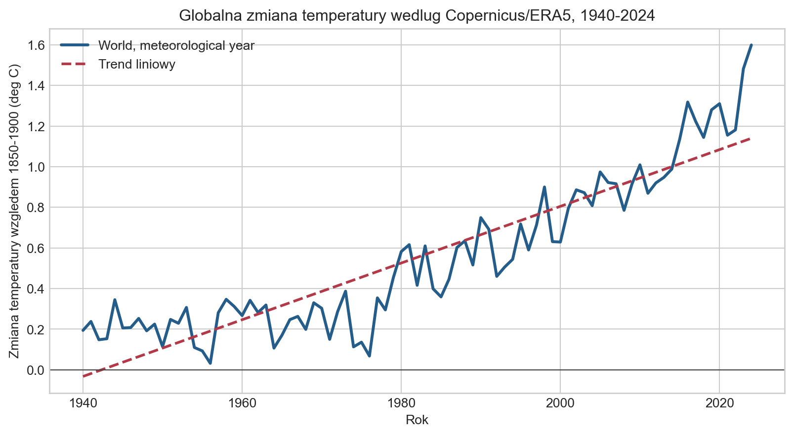
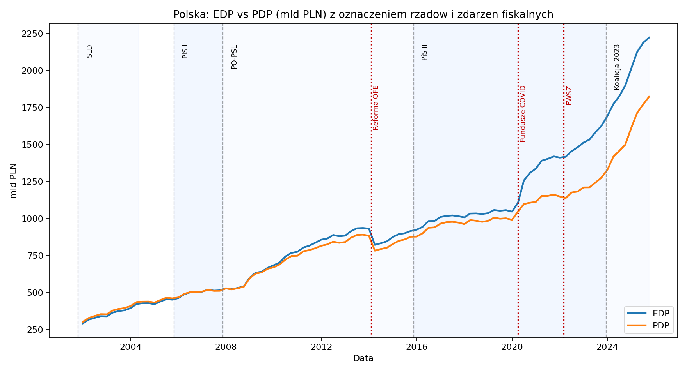

Sport
Wiek a statystyki zawodników NBA
Wykresy słupkowe
Jak różnią się średnie punkty, asysty i zbiórki między grupami wieku? Porównaj profile zawodników, pamiętając, że obserwacje dotyczą zawodnika w sezonie, a nie całej kariery.
Zobacz wzorzec. Zadaj pytanie. Sprawdź dane.
Wybrane prace pokazują różne sposoby opowiadania o danych: od pojedynczego porównania po interaktywną historię. Wybierz temat albo wyszukaj narzędzie czy typ wykresu. Odnośniki do Tableau otwierają pełne wizualizacje w nowej karcie.
Sport
Wykresy słupkowe
Jak różnią się średnie punkty, asysty i zbiórki między grupami wieku? Porównaj profile zawodników, pamiętając, że obserwacje dotyczą zawodnika w sezonie, a nie całej kariery.

E-commerce
Wykresy czasowe i rankingi
Jak wygląda sprzedaż w analizowanym zbiorze e-commerce? Przegląd przychodów, marek, produktów i jakości danych jest punktem wyjścia do segmentacji klientów.

Gry wideo
Słupki, wykres obszarowy, treemap
Które platformy, gatunki i tytuły wyróżniają się w zestawieniu sprzedaży? Zmieniaj wydawcę i porównuj trendy, rankingi oraz strukturę sprzedaży w historycznym zbiorze.

Gry wideo
Zestawienie wykresów
Porównaj perspektywę PlayStation, Nintendo i Xbox w analizie konkurencji z lat 1994–2010. Kolejne punkty historii prowadzą przez przygotowane widoki sprzedaży.

Demografia
Wykres liniowy z prognozą
Jak prognoza urodzeń na grudzień 2019 roku wypada na tle średniej z pięciu lat? Historyczny przykład zestawia przebieg miesięczny z prognozą; pozostałe arkusze pokazują także inne kraje i sezonowość.

Edukacja
Wykresy słupkowe
Ile lat spędziły w szkole osoby w wieku 25–34 lat? Porównaj średnie dla kobiet i mężczyzn w krajach przedstawionych na wykresie. Liczba lat nauki opisuje jej długość, nie jakość.

Klimat
Wykres liniowy z trendem
Roczne anomalie temperatury według Copernicus/ERA5 względem lat 1850–1900 oraz dopasowany trend liniowy. Zobacz długookresową zmianę na tle wahań między latami.

Finanse publiczne
Wykres liniowy z oznaczeniami okresów
Jak zmieniały się miary EDP i PDP na tle kolejnych rządów oraz wybranych punktów zwrotnych? Wykres pokazuje, dlaczego dynamikę długu trzeba czytać razem z definicją wskaźnika i kontekstem fiskalnym.
Więcej prac: pełny profil Jacek Filipek w Tableau Public. Galeria prezentuje wybrane publikacje; pozostałe materiały są dostępne na profilu.
E-commerce: opis aplikacji Streamlit zawiera zrzuty ekranów i instrukcję uruchomienia lokalnego.